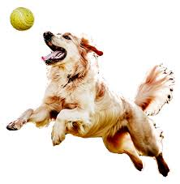

Suositummat lemmikit
Koirat
Ihmisen paras ystävä
Koirat ovat seurallisia, älykkäitä ja uteliaita eläimiä. Eri koirarodut voivat olla hyvin erilaisia niin kooltaan, ulkonäöltään kuin luonteeltaankin.
Jotkut koirat rakastavat pitkiä lenkkejä ja vauhdikkaita leikkejä, kun taas toiset viihtyvät parhaiten omistajansa vieressä sohvalla.
Koiragalleria
Iloinen koira

Tämä koira nauttii ulkoilusta ja uusien paikkojen tutkimisesta.
Leikkisä pentu
Pennut ovat uteliaita ja haluavat tutkia kaikkea ympärillään.
Koira luonnossa

Metsät, puistot ja rannat tarjoavat koirille paljon uusia hajuja ja kiinnostavaa tutkittavaa.
Lepäävä koira
Vauhdikkaan päivän jälkeen myös koira tarvitsee rauhallisen paikan lepäämiseen.
Kissat
Uteliaita ja itsenäisiä seuralaisia
Kissat tunnetaan uteliaisuudestaan, ketteryydestään ja itsenäisestä luonteestaan. Ne voivat viettää suuren osan päivästä nukkuen, mutta innostuvat nopeasti kiinnostavasta lelusta tai liikkuvasta kohteesta.
Monet kissat pitävät korkeista paikoista, joista ne voivat tarkkailla ympäristöään rauhassa.
Kissagalleria
Utelias kissa
Kissat haluavat usein tutkia uusia esineitä ja paikkoja.
Leikkivä kissa
Pallot, narut ja erilaiset lelut voivat tarjota kissalle paljon tekemistä.
Nukkuva kissa
Kissat ovat mestareita löytämään kodin mukavimmat nukkumapaikat.
Kissa ulkona
Ulkona kissa voi seurata lintuja, hyönteisiä ja ympäristön tapahtumia.